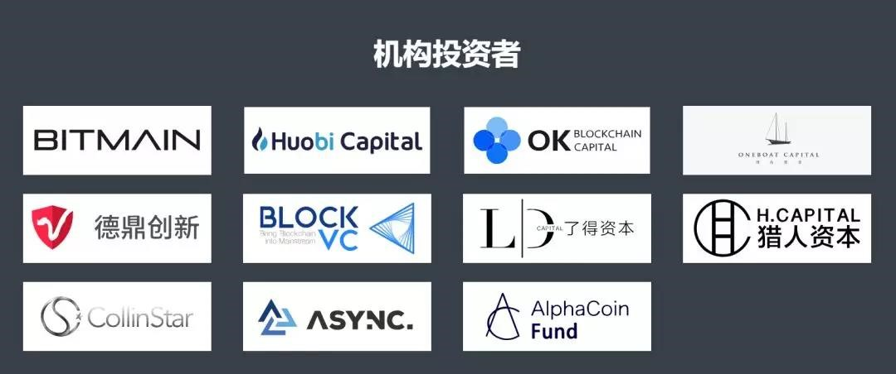
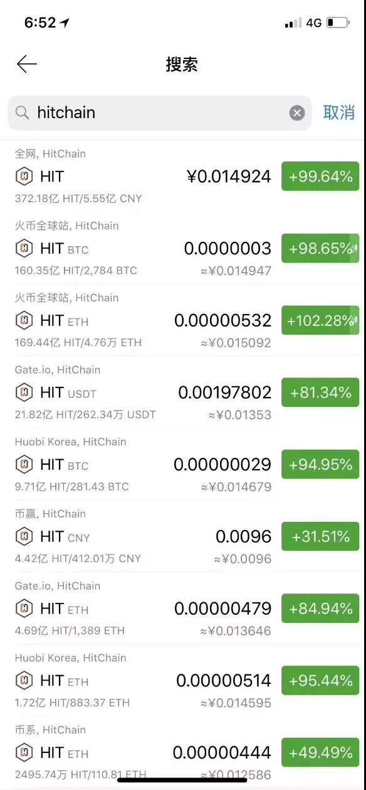

共识的重组：寒夜里的HIT光芒
据近日快讯报道，比特大陆已完成对分布式开发者社区HitChain的战略投资，这是近一个月内，继比特大陆投资世界最大、最活跃的Hackathon组织者和世界最大的Hacker社区——DoraHacks之后，第二次进行开发者相关的生态布局，表达了比特大陆对开发者的重视和支持开发者的决心。
七月底以来，反弹至8000美元以上的BTC再次跌落至7000美元左右，无情地告诉所有依然没有离场的人，熊市还远远没有结束。FCoin的一石激起千层浪也没能力挽狂澜，整个市场再次陷入沉寂，币民们的希望也在滑向破灭的深渊。在笔者看来，行情似乎不可避免地指向了赵东所言的“真正的冬天”，指向了长期的熊市。
这一切是否源于“共识的破裂”（语出Dovey Wan），我们无法给出确定的结论。但是在熊市中一个冉冉升起的巨星项目中，笔者看到了共识的重组与融合——HitChain的横空出世，罕见地统一了交易所、头部投资机构、区块链媒体、普通炒币用户的共识；更令人不禁遐想的是，HitChain项目仍处在起步阶段，未来能带给我们多大的惊喜，就要看有多少个人和群体可以凝聚在这股共识之下。
这股共识的起源，恐怕可以追溯到几十年前。从开源软件的兴起，到林纳斯的Git协议，从微软视开源为癌症到其成为GitHub上最大的开源代码贡献者，再到几个月前微软75亿美元全资收购代码托管平台GitHub。实际上，GitHub被收购一定程度上是一个堪比欧盟通过“GDPR”的重大事件，因为这次收购代表着GitHub从一个中立的第三方平台过渡为了由科技巨头微软所控制的中心化平台。代码开发者们本身已经在现有的开源生态中被红帽等公司夺走了他们应得的物质回报，GitHub被收购一定程度上从精神上掠夺了开发者的伊甸园。“全球最大同性交友平台”的“沦陷”，大大解构了现有的开源生态，新的转机与闪闪的星斗，便应运而生。HitChain作为分布式的代码开发与托管平台，生来便具有分布式、保障开发者知识产权、以通证形式保障开发者物质激励的三大优势，并且践行区块链精神，以“开发者共有、共建、共享”的态度来最大限度构建起新的开源生态，形成崭新的共识。
开发者之间积聚的强大势能，一定程度上转化为了HitChain进行公募时的动力。据悉，HitChain在公募平台上开放了软顶3000ETH、硬顶5000ETH的募资计划，最终募资在短短7分钟内便宣告完全募满，全部售空。散户们的高度认可足以证明HitChain弥合了当今加密货币市场中低迷且割裂的市场情绪，而更可怕的是，这股共识在头部投资机构层面达到了更高的高度。
HitChain基金会的机构募资方案最终确定，用了足足半个月的时间，原因并不是缺乏足够投资，而是2天内超募3倍，团队只能在各大头部机构一拥而上的哄抢中找到相对平衡的方案。最终面向大众公开的投资机构名单中，HitChain带给人们的震撼达到了一个新的高度：

比特大陆，算力与芯片研发界无可匹敌的霸主；火币资本、OK资本、同舟资本，交易所三强集体重金押宝；德鼎创新，来自硅谷风投教父的肯定；BlockVC、了得资本、科银资本、ASYNC、Alphacoin等等头部机构的战略投资，无一不彰显着资本层面对HitChain的看好与其所拥有的雄厚资源背书。
HitChain到底有何独到之处，在资本市场上一枝独秀，获得如此众多头部机构的青睐？从其团队与顾问成员中可见一斑：
黎江，现任微软中国CTO，中国IT界举足轻重的泰斗级人物，出任HitChain基金会主席；Khee Joo Tan、Leon Li、Nick Ma、Thomas Tan等人均是来自世界各国的开源技术、分布式存储技术专家，拥有的行业洞见与技术积累令人咂舌。
顾问方面，国内知名区块链底层技术专家田甲与国产公链领军者AELF创始人马昊伯的加盟给团队补足了区块链技术层面的短板，更有社科院特聘教授、著名区块链布道者王彬生与360代码卫士首席科学家许中兴等各有专长的顶级大咖支持。
而真正让HitChain有底气叫板GitHub的，是其深度战略合作伙伴，深耕开源十余年的中国最大开源技术社区——开源中国。开源中国将在线下会议meetup举办，开发者导流培训、人才输送、代码托管协议优化开发、众包模式Token化改造等多个业务场景与HitChain基金会深度战略合作，共同构建新的开源生态。
完成募资后的HitChain用不到一个星期的时间登陆了huobi global与Gate.io两家国际一线交易所，其进展之快令诸多币圈人士瞠目结舌。而在如此短的时间内登陆两家交易所，HitChain的市场表现与舆论反应如何？

上线后暴涨四倍有余，且24小时交易量最高排进全球加密货币市场第六名，这便是HitChain经过市场检验后给出的答案。兼具深度和涨幅的市场表现让机构投资者与散户投资者获得了丰厚回报的同时，更是在不停吸引更多新用户的入场。
恐怕是带给了投资人难得的“用户体验”吧，市场热度上，HitChain俨然成为了中流击水搏击风浪的弄潮儿，全网第一热搜加密数字货币的名号实至名归。就连币圈著名意见领袖数字货币趋势狂人的狂人研究院也于近日发表了HitChain的项目评级报告，最终给出了B+的良好评级。
HitChain究竟是冉冉升起的恒星还是稍纵即逝的流星我们还要看后续长期的市场表现，不敢断言。但就“开源社区的庞大用户人群”+“去中心化的代码托管平台”带来的宏伟“共识”来看，显然投资人，币民和交易所构成的整个交易生态环境在经历了若干摧心裂肺的大起大落后，已经被锻炼得越来越火眼金睛，旧套路被击穿，专业性被热捧，价值投资在寒冬恐怕才会兀显，这对整个行业来说终究是拨乱反正的好事。愿理性价值之光照亮漫漫长夜，通过回归技术本质之路，走进牛市的黎明。
 (扫码关注官方账号）
(扫码关注官方账号）